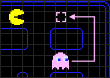
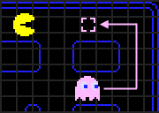
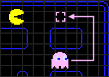

Il fantasma rosa, noto come "Pinky", nel gioco di Pac-Man, ha una personalita' descritta come veloce, sebbene in realta' non si muova piu' rapidamente degli altri fantasmi. Nel suo stato "Chase", Pinky mira a posizionarsi quattro caselle davanti a Pac-Man, ma a causa di un errore di overflow nel codice del gioco, quando Pac-Man guarda verso l'alto, il suo obiettivo viene erroneamente impostato quattro caselle davanti e quattro a sinistra di Pac-Man. Questo fa si' che Pinky possa essere facilmente ingannato da Pac-Man, poiche' se Pac-Man si avvicina troppo, Pinky scegliera' di girare altrove. Quindi, una strategia comune e' quella di simulare un movimento verso Pinky per farlo deviare dalla sua traiettoria.
